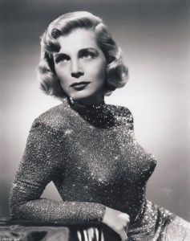
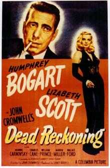
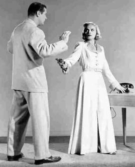
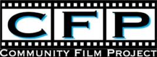

Exploring the Piazza dell’Arte: Lizabeth Scott
Our series exploring the lives and works of the artists featured on the Piazza dell’Arte at Scranton’s Courthouse Square continues today with a profile of movie star Lizabeth Scott, described by Halliwell’s Filmgoer’s and Video Viewer’s Companion as “…a box office concoction of blonde hair, defiant expression and immobile upper lip.”
Scott was born Emma Matzo in the Pine Brook Section of Scranton on Sept. 29, 1922, and attended Central High School and Marywood College, before moving to New York to study at Alvienne School of Drama in New York.
While working with a small Midtown Manhattan summer stock company in 1942, Scott got her first break when she was tapped to be Tallulah Bankhead’s understudy in the Thornton Wilder play “The Skin of Our Teeth.”
After leaving the production briefly, Scott returned and was eventually given a leading role in “The Skin of Our Teeth.” This led to a lead role during the Boston run of the play. Scott took on the name “Elizabeth” during the Broadway production but, the day after opening night in Boston, dropped the “e,” she said, “just to be different.”
Soon after, she made her first screen test at Warner Brothers, where she met Hal Wallis who had discovered her during the New York run of “The Skin of Our Teeth.” The test did not go well but Wallis recognized her potential. Wallis resigned as production head at Warners in 1944 to form his own production company, releasing films primarily through Paramount. He signed Scott to a contract and she made her film debut in the Wallis-produced “You Came Along” in 1945.
The 23-year-old Scott plays an escort that falls in love with a G.I. dying of leukemia. Her screen presence and sensual, captivating voice immediately invited comparisons to Lauren Bacall. Paramount publicity dubbed her “The Threat” and she was cast as the in a series of film noir thrillers beginning with “The Strange Love of Martha Ivers” in 1946, featuring Barbara Stanwcyk and Kirk Douglas in his film debut.
In 1947, Scott starred opposite Humphrey Bogart in the noir thriller “Dead Reckoning” taking her first crack at the archetypal femme fatale role. Bogart would refer to her in the film as “Cinderella with a husky voice.” At the age of 25, her billing and portrait were equal to Bogart’s on the film’s advertisements.
She was paired with Kirk Douglas and Burt Lancaster as a nightclub singer in 1947’s “I Walk Alone,” a noirish story of betrayal and vengeance; then worked with Lancaster again in “Desert Fury,” a story of love, deception and corruption filmed in Technicolor.
According to film historian Eddie Muller, Scott appeared in more film noir than any other actress with nearly 15 noir thrillers in her credits; and in 1949, she appeared in “Too Late for Tears” playing the avaricious Jane Palmer, a hateful wife who murders her husband for money.
She appeared in 21 films between 1945 and 1957, mostly for Wallis and Paramount, with her last major role being 1957’s “Loving You” opposite Elvis Presley. She did occasionally guest-star on television in the following years and had a small role in the British film “Pulp” in 1972 featuring Michael Caine and Mickey Rooney.
Scott had her name legally changed to “Lizabeth Scott” in 1949 after using it professionally for four years. She has a star on the Hollywood Walk of Fame for her contribution to motion pictures.
In later years, she retreated from public view, though she appeared at an American Film Institute tribute to Hal Wallis who helped launch her career and more recently at the AMPAS Centennial Celebration for Barbara Stanwyck in May 2007.
Spiritual Heir: While we could point to any of the actresses from the Electric Theatre as proof that the Scranton area continues to produce talented female performers, instead we’ll focus on the medium that made Scott a star and highlight the efforts of the actors, actresses and filmmakers of the Community Film Project to foster the local film scene. The CFP formed in 2004 and, since that time, has helped countless local filmmakers achieve their vision. The CFP once again produced a series of CFP Shorts shown before summer blockbusters at The Endless Mountains Theatre. Thanks to the CFP, Scott’s legacy of strong Northeastern Pennsylvania women in film is sure to live on.
This article was part of a series that explored the lives and legacies of the artists featured on the Piazza dell’Arte at Courthouse Square, Scranton. It first appeared on Electric City Renaissance. Read the rest of the series.